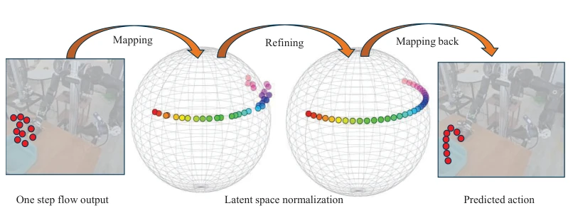

Invertible Neural Network Adapter for One-Step Flow Matching in Robot Manipulation
Yu Zhang, Kangyi Ji, Yongxiang Zou, Rongtao Xu, Feng Zheng, Long Cheng abspdf
论文点评Review
这篇论文试图用可逆神经网络（INN）给单步流匹配（Flow Matching）打补丁。动机很明确：流匹配通常要多步推理，太慢；单步又容易崩。作者把动作生成强行塞进一个可逆的潜空间，声称能保信息不失。实验数据确实漂亮，仿真和真机都跑赢了基线，推理延迟砍了一半。但别高兴太早，这方法假设动作分布能映射到结构化潜空间，对于高度多模态或离散的动作分布是否有效还是个问号。而且训练时的计算和显存开销增加了，虽然推理快，但训练慢。对于追求极致效率的实时控制是利好，但对于复杂长程任务，目前只验证了短 horizon。总的来说，是个实用的工程改进，但理论深度略显不足，属于“先跑通再说”的典型 Embodied AI 风格。
This paper attempts to patch one-step Flow Matching using Invertible Neural Networks (INN). The motivation is clear: Flow Matching typically requires multi-step inference, which is too slow; one-step is prone to collapse. The authors force action generation into a reversible latent space, claiming to preserve information without loss. The experimental data is indeed impressive; both simulation and real-world machines outperformed baselines, cutting inference latency by half. But don't get too excited; this method assumes action distributions can be mapped to a structured latent space, and whether it works for highly multimodal or discrete action distributions remains a question mark. Moreover, computational and memory overhead increased during training; although inference is fast, training is slow. It is beneficial for real-time control pursuing extreme efficiency, but for complex long-horizon tasks, only short horizons have been verified so far. Overall, it is a practical engineering improvement, but theoretical depth is slightly insufficient, belonging to the typical Embodied AI style of "run it first and talk later".
The core challenge of robotic manipulation lies in precise action generation under unstructured environments. Diffusion Policy [5] is good but inference is slow; Flow Matching [11] has high training efficiency but poor one-step generation quality. Existing one-step Flow Matching methods such as ManiFlow [16] and Mean Flow [17] rely on auxiliary loss terms to approximate one-step generation, resulting in learned dynamics inconsistent with the true average velocity field and poor generalization. Particularly performing poorly in multi-finger interaction, long-term temporal consistency, and generalization to unseen environments. Furthermore, existing architectures lack mechanisms to integrate multimodal observations such as vision, language, and proprioception. Therefore, there is an urgent need for a method that can maintain the efficiency of Flow Matching while improving one-step inference robustness by constraining the latent space, to resolve the latency and accuracy contradiction in real-world deployment.
方法Method
整体框架基于流匹配公式，但引入了可逆神经网络适配器。流程如下：首先，流匹配模型根据噪声样本和观测预测速度场，生成单步去噪估计 x_hat。接着，x_hat 输入 INN 前向过程 g() 得到潜变量 y，并归一化到球面空间 y_tilde。最后，通过 INN 逆过程 g_inv() 将 y_tilde 映射回最终动作 x_pre。创新点在于利用 INN 的双射性质，在潜空间约束动作生成轨迹，防止信息不可逆丢失。损失函数包含数据空间的重构损失和潜空间的一致性损失，联合优化确保正反向过程一致。相比直接学习速度场，该方法将动作预测映射到结构化流动力学空间，提升了训练稳定性和动作生成的结构一致性，从而在单步推理下实现高质量动作合成。
The overall framework is based on the Flow Matching formula but introduces an Invertible Neural Network adapter. The process is as follows: First, the Flow Matching model predicts the velocity field based on noise samples and observations, generating a one-step denoising estimate x_hat. Next, x_hat is input into the INN forward process g() to obtain latent variable y, and normalized to spherical space y_tilde. Finally, y_tilde is mapped back to the final action x_pre through the INN inverse process g_inv(). The innovation lies in utilizing the bijective property of INN to constrain action generation trajectories in the latent space, preventing irreversible information loss. The loss function includes reconstruction loss in data space and consistency loss in latent space, jointly optimizing to ensure consistency between forward and backward processes. Compared to directly learning the velocity field, this method maps action prediction to a structured flow dynamics space, improving training stability and structural consistency of action generation, thereby achieving high-quality action synthesis under one-step inference.
实验Experiments
仿真测试涵盖 RoboTwin（2D/3D）和 Libero 基准，对比 Diffusion Policy、Flow Matching、ManiFlow 等基线。真机实验在 UR 和 OpenArm 平台上进行，任务包括水果抓取、积木堆叠和双臂握瓶。指标为任务成功率与推理延迟。结果显示，该方法在单步推理下达到 SOTA 或接近 SOTA 性能，平均成功率提升显著。真机实验中，推理延迟从 110ms 降至 61ms，提升近 45%。Libero 基准上结合 Qwen-VL 模型也表现优异。消融实验表明，简化结构（如零初始化噪声）在 3D 点云下同样有效。尽管训练 epoch 减少，但性能未降反升，证明了适配器对策略优化的增强作用，验证了其在多模态观测下的鲁棒性。
Simulation tests cover RoboTwin (2D/3D) and Libero benchmarks, comparing against baselines such as Diffusion Policy, Flow Matching, ManiFlow, etc. Real-world experiments were conducted on UR and OpenArm platforms, with tasks including fruit grasping, block stacking, and dual-arm bottle holding. Metrics are task success rate and inference latency. Results show that the method achieves SOTA or near-SOTA performance under one-step inference, with significant improvement in average success rate. In real-world experiments, inference latency dropped from 110ms to 61ms, an improvement of nearly 45%. Combining with the Qwen-VL model on the Libero benchmark also performed excellently. Ablation studies show that simplified structures (such as zero-initialized noise) are also effective under 3D point clouds. Although training epochs were reduced, performance did not decrease but instead increased, proving the adapter's enhancement effect on policy optimization and verifying its robustness under multimodal observations.
其他图片Other Figures

Figure 1: Overall framework of the proposed method